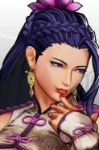

Selecione um personagem
-

- 
Kyo
Kyo Kusanagi é o personagem principal da Orochi Saga em The King of Fighters. Ele foi introduzido primeiramente em The King of Fighters '94 como o líder do Japan team. Ele é rival de Iori Yagami e K'.